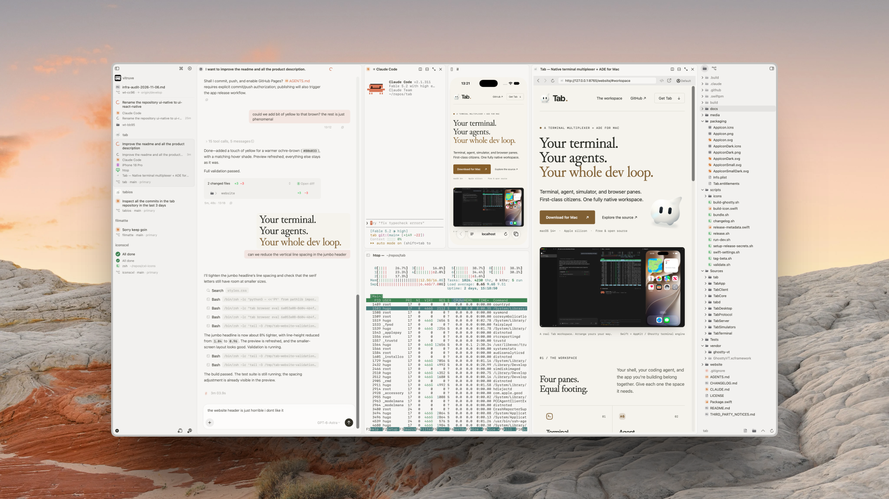

{{head title="Tab" canonical="" description="Tab is a fully native terminal multiplexer and agent development environment for the Mac. Terminal, agent, simulator and browser panes in one workspace, with its own server included."}}
</head>
<body class="p9" data-layout="plain">
{{masthead}}
  <main>
    <article class="p9-column p9-opening">
      <h1 class="p9-statement">Terminals, agents, simulators and browsers, side by side in one <span class="p9-accent">native workspace.</span></h1>
      <ul class="p9-meta">
        <li class="p9-label"><span class="p9-dot" aria-hidden="true"></span>Version {{version}}</li>
        <li class="p9-label">macOS 14 or later</li>
        <li class="p9-label">Apple silicon</li>
      </ul>
      <section class="p9-section">
        <p>Tab is a terminal multiplexer and agent development environment for the Mac. <span class="p9-muted">An agent development environment is a workspace for coding agents and the tools you use to run, inspect and test their changes. Tab brings them together, with its own background server included.</span></p>
      </section>
      <figure class="p9-wide">
        <div class="p9-media"></div>
        <figcaption class="p9-caption"><span class="p9-label">Fig. 01 / A Tab workspace</span></figcaption>
      </figure>
      <section class="p9-section" id="panes">
        <h2>Four panes, equal footing</h2>
        <p>Your shell, your coding agent and the app you’re building belong together. <span class="p9-muted">Give each one the space it needs, and split, resize and arrange them your way.</span></p>
        <ul>
          <li><strong>Terminal.</strong> Run commands, watch logs and keep development servers going with the Ghostty terminal engine.</li>
          <li><strong>Agent.</strong> Work with Claude Code or Codex in a native conversation pane, with the tools to inspect and test their changes right beside them.</li>
          <li><strong>Simulator.</strong> See your mobile app where you’re working, with iOS simulators and Android emulators in their own panes.</li>
          <li><strong>Browser.</strong> Keep your local app, a preview or the docs in view while you change the code that powers it.</li>
        </ul>
      </section>
      <section class="p9-section" id="native">
        <h2>Fully native, right down to the feel</h2>
        <p>Tab is written in Swift and built with AppKit, with native keyboard shortcuts, flexible split panes and macOS glass surfaces. <span class="p9-muted">Its terminals run on the vendored Ghostty engine, with no Electron runtime.</span></p>
      </section>
      <section class="p9-section" id="tabs">
        <h2>A tab for every task</h2>
        <p>Give each project or Git worktree its own tab in the sidebar and arrange panes inside it. <span class="p9-muted">Parallel tasks stay separate, with their files and Git diffs close at hand.</span></p>
      </section>
      <section class="p9-section" id="agents">
        <h2>Your agents, your way of working</h2>
        <p>Native agent panes use the Claude Code or Codex command line tool you already have installed and signed in. <span class="p9-muted">Prefer another agent? Run it in a terminal pane. Agents can drive Tab too, opening panes and reading terminals through the <code>tab</code> command.</span></p>
      </section>
      <section class="p9-section" id="remote">
        <h2>A remote Mac that feels local</h2>
        <p>Connect to another Mac over SSH and work with its projects, terminals and simulators. <span class="p9-muted">Browser pages travel through the server’s tunnels, so <code>localhost</code> stays with the workspace.</span></p>
      </section>
      <section class="p9-section" id="server">
        <h2>Close the app, keep your terminals</h2>
        <p>Tab’s own background server, <code>tabd</code>, owns your terminal sessions and workspace state. Quit the app, come back later and reconnect to your work. <span class="p9-muted">The Mac running your workspace needs to stay awake, and closing a terminal pane ends its session.</span></p>
      </section>
      <section class="p9-section" id="download">
        <h2>Get Tab</h2>
        <p>Download the latest disk image, drag Tab into Applications and open a project. <span class="p9-muted">Tab is free and open source. Agent provider accounts and fees are separate, and the <a href="docs.html#requirements">docs</a> list what each pane needs.</span></p>
      </section>
      <a class="p9-button" href="https://github.com/hugocxl/tab/releases/latest">{{icon download}}Download for macOS</a>
    </article>
  </main>
{{footer}}
</body>
</html>
